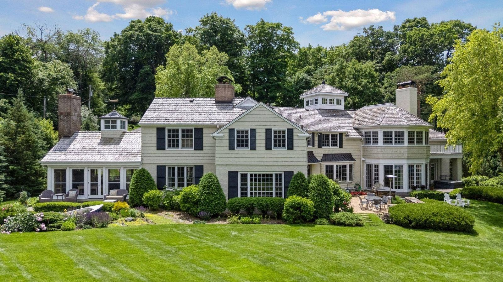
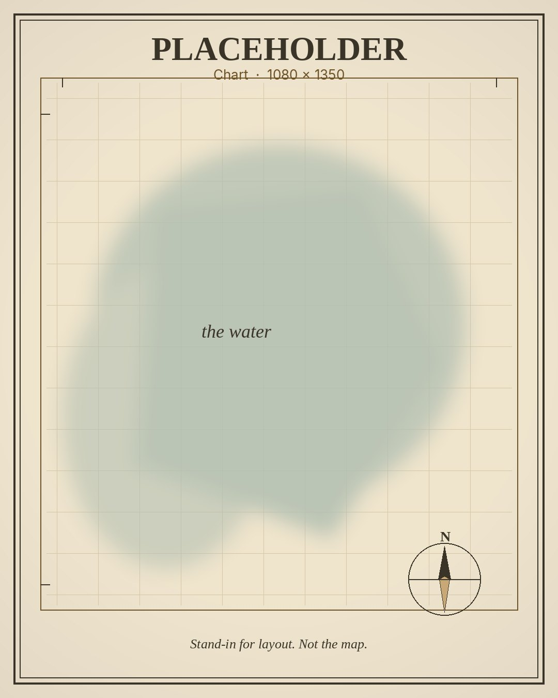
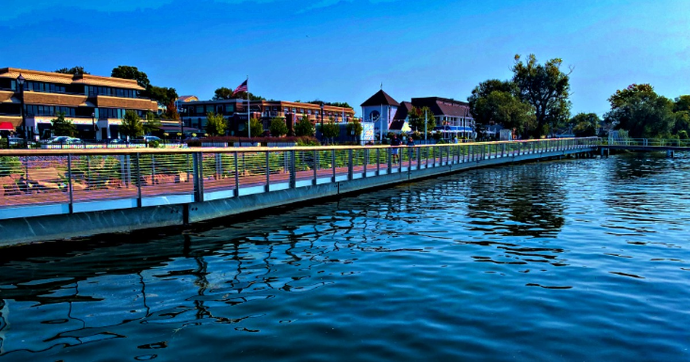

Home / Lake Minnetonka Bays / Wayzata Bay

Wayzata Bay on Lake Minnetonkathe front porch of the lake
By Geoffrey Serdar
Patrick and Andrea Bassett just sold their colonial on a point of Wayzata Bay in Woodland, on Lake Minnetonka, and Patrick’s stepmother was Florence Knoll Bassett, the designer behind the modern American office.
They bought it in 1988, county records show. It closed November 2 for $6,227,200.
Their place sits where a narrow channel runs in from the bay to Woolsey Pond. The pond takes its name from George and Alvira Woolsey, who grew fruit on the hillsides there in the years after the Civil War. Folks once called it Pete’s Pond too, after a Danish farmer named Peter Peterson who cut ice from it and hauled the big dripping blocks to the summer cottages by horse and wagon.
In 1915 a Minneapolis doctor, Angus Morrison, had that channel dredged so the land along it would have lake access. Channel shore like this is why, the listing says, the place can keep permanent docks today. The listing dates the colonial to 1942 and talks about a sandy beach, a guest house and a fire pit at the tip of the point, looking across the water to downtown Wayzata.
The pond’s names, and that 1915 dredging, are written up in Woodland’s Fall 2016 newsletter.
Patrick grew up in Miami. His father, Harry Hood Bassett, led the First National Bank of Miami, and his mother, Marguerite, parachuted into occupied France for the Free French and was awarded the Legion of Honor.
Five bedrooms and seven baths, 6,122 square feet on 2.34 acres. The shoreline runs more than 400 feet. Listed January 27, 2026, the asking price came down from $7,950,000 to $6,950,000 over 279 days, most of a year, and the sale landed $722,800 under that last ask.
If you knew the Bassetts and something here isn’t right, text me and I’ll fix it.
One more, and correct me if I’m wrong: I think Andrea is the Andrea Bassett who served as Woodland’s mayor from 1987 to 1990. If you know better, tell me. Tell me
Help us fill in the story
A few things I don’t know. If you do, tell me.
Who built the house, and who first owned it in the 1940s. Who owned it before the Bassetts bought it in 1988. Whether Andrea Bassett served as Woodland’s mayor from 1987 to 1990. Whether the point or the channel lagoon ever had a name. Any old photos or memories of Woolsey Pond, or Pete’s Pond.
Tap a bay or town to explore.

The week it sold
The week of November 2 to 8, Woodland had one close, this house, at $6,227,200 on November 2. Wayzata had two closes, $1,204,500 on November 2 and $9,300,000 on November 4. Those are whole-town counts, on the water or not. Wayzata and Woodland are the two towns on this bay.
I post the closed sales every Monday, town by town, on the weekly list.
More from Wayzata Bay
Other bays
How Wayzata Bay fits together

On a summer Thursday night, more than a hundred sailboats fill this bay. The Wayzata Yacht Club, founded in 1965, races for fourteen weeks from May to September. The sun goes down behind the sails, the boats come back in, and the Great Northern Depot is right there on the water. The railroad arrived in 1867, and the depot was finished in 1906. This is the front porch of the lake.
Tie up at the downtown dock and you are beside the building where Moore Boat Works started in 1889. Out on the water, Breezy Point was once Spirit Knob, a place of spiritual meaning to the Mdewakanton Dakota. In 1852 a visitor called this water Lake Bryant.
Cross to the south shore and the woods take over. That is Woodland, a small city of about 0.8 square miles with 5.9 miles of shoreline, between Wayzata and the city of Minnetonka on the north and east and Deephaven on the south and west. The colonial that sold in November sits on a point of this shore.
For a long time this shore was summer homes. Maplewoods was platted in 1882, and by 1889 nearly all of the shoreline had them. A small boat works stood on this shore, steamboats stopped at the docks, and the streetcar line ran through the south of the city. From about 1935 it slowly turned year-round. In 1948 the residents of Maplewoods and the Groveland Homeowners Association incorporated the city. That association is the old Methodist Lakeside Assembly grounds, formed in 1902. The name joins Wood from Maplewoods and land from Groveland. Nick Duff’s history of Maplewoods calls it “an island of wooded hills and marsh, nearly surrounded by water.”
Out here, the name on the envelope is not always the city on the tax roll. This house is in Woodland. The mailing city is Wayzata.
If you are reading from another state, here is the picture that helps. Lake Minnetonka is not one bowl of water with one town around it. It is a string of bays, and each end of it keeps its own pace. I live in Excelsior, on Minnewashta Park, not out on this water. What I can do is tell you which town a shore really belongs to, what has sold, and what a home here would likely bring. The numbers change every week. The shape of the water doesn’t.
On this bay
The bay is about 751 acres, with 3.33 miles of shoreline, and 63 feet at its deepest. Downtown and the Depot look south-southeast onto the water. In late fall and winter the sunset swings to the southwest and lands over the water toward Breezy Point. In June it sets behind town, so the Ferndale side, looking back, gets the show.
The lake-wide ice-out median is April 13. In 2026 the ice went out April 3.
James J. Hill Days were September 11 to 13, 2026, on Lake Street, the Panoway and the Depot. The Chilly Open golf tournament on the frozen bay was February 7, 2026. The Wayzata Yacht Club Boat Light Parade ran June 27 and 28, 2026, from 9:30 to 10 pm, east to west.
What homes here ask and sell for
| ASK | $26.5M | 372 Ferndale Rd S | October 2026 |
| ASK | $16.45M | 358 Ferndale Rd | October 2026 |
| SOLD | $6,227,200 | Woodland, on a point | Nov 2, 2026 |
| SOLD | $10.03M | 555 Bushaway Rd | 2018 |
| SOLD | $10.0M | 405 Bushaway Rd | Dec 15, 2023 |
ASK means a list price, not a sale. Sales are public records or reported sales, shown with their date. Nothing here predicts future prices. See the most expensive homes on the lake and this week’s closed sales.
Getting on the water
The City of Wayzata public access is on the LMCD list of public accesses. Downtown has a public dock, so you can tie up and walk to Lake Street. More on slips: Lake access and boat slips and the Lost Lake slip guide.
Where to eat and stop
6Smith is on the water, in the old Moore Boat Works building. Wayzata Brew Works is in the same building, with the same view.
Keep reading: this week’s closed sales, all the bays, Wayzata, and Woodland.
Towns on the bay
Questions people ask
Where is the Woodland house that just sold?
It sits on a point on the south shore of Wayzata Bay, in Woodland, where a narrow channel runs in from the bay to Woolsey Pond. The mailing city is Wayzata, and downtown Wayzata is across the water to the north.
Which towns are on Wayzata Bay?
Wayzata and Woodland.
How big is Wayzata Bay?
About 751 acres with 3.33 miles of shoreline and a max depth of about 63 feet.
What have homes on Wayzata Bay sold for?
Reported sales include $10.03M on Bushaway Rd in 2018 and $10.0M in December 2023. In October 2026 the top ask on the bay was $26.5M. An ask is not a sale.
When is race night?
Thursdays, May to September, run by the Wayzata Yacht Club.